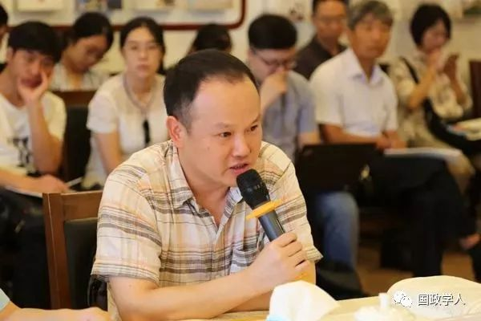
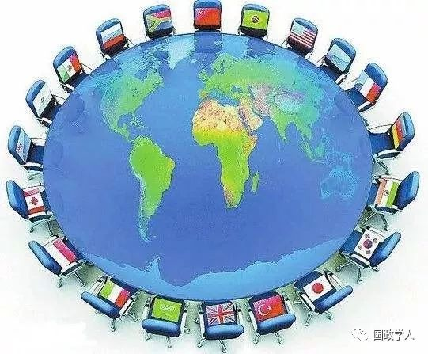
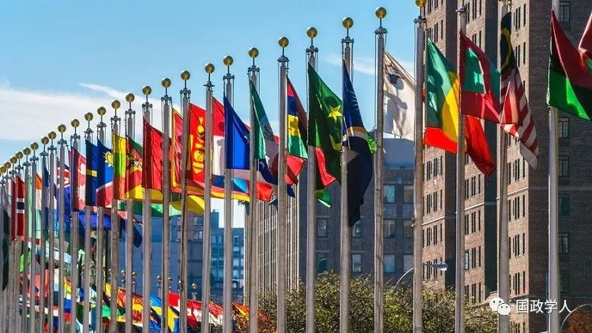

收录于合集

简 介
【 作者 】
尹继武， 中国人民大学国际关系学院教授。研究方向为国际关系理论、政治心理学、国际安全与中国外交。主要著作有《社会认知与联盟信任形成》《战略心理与国际政治》等。
本文系中国外文局对外话语体系研究机制2017年度研究项目资助成果，项目批准号： 17CBZX102；蒲晓宇、余博闻、吴文成、陈拯、张传杰和孙学峰等对本文亦有贡献。
【 来源 】
《人民论坛·学术前沿》2019年第3期
内容提要
21世纪以来，中国如何向国际社会贡献新的价值、理念和模式，成为中国外交的一项重要课题。与传统认识不同的是，基于世界观、行为准则和制度体系的三层次规范内涵分析，中国进行了丰富的国际规范倡议和创新。未来如何更好地增强中国的规范供给和创新，是中国崛起和复兴的合法性和正当性基础，也是中国向国际社会贡献和平发展力量的重要内容。
关键词： 中国外交 国际规范 倡议 创新

尹继武
正 文
自改革开放以来，中国就开始逐步确立了融入现行国际社会的政策，这也被称之为中国的国际社会化进程。总体而言，这一政策表现为中国逐渐调整了先前关于时代主题的看法，尤其是冷战结束以来，逐步调整了对于现行的国际秩序的态度。[1] 诸多的研究表明，中国在总体上接受现有西方主导的国际体系的基础上，积极融入国际社会，接受主流的国际制度和规范的理念，实现了从体系的革命者到参与者和建设者的身份转变 [2] ，只对加强既有体系的公正性和合理性发出系列呼吁，即要求推动国际秩序朝更加公正与合理的方向发展。
从物质性标准来看，中国自身的发展早已成为对世界的重要贡献，为此中国也获得了应有的国际地位和尊重。但无论是中国自身内部还是外部世界，对于中国的规范创新、制度供给和价值贡献，都存有各种批评、不满和质疑之声。[3] 本文基于描述性分析，系统梳理中国自身关于国际规范的创新与贡献，与传统认识相反的是，认为中国自身有系统和完整的国际规范价值和追求。 基于三个层次的规范内涵，中国的国际规范创新具有自身的成就和特点，未来如何进一步有效总结中国的创新实践及其理论逻辑，是中国向国际社会贡献更多规范理念、价值体系的重要基础。
一般而言，规范是指具有给定身份的行为体适当行为的准则。 [4] 根据不同的标准，规范可以区分为不同的类型，比如有限制性规范和构成性规范，前者是“规矩和制约人们的行为”，后者是“塑造新的行为体、形成新的利益、创建新的行动类别”。规范也可以分为评判性规范或规定性规范，这类着眼于“应然的”规范，是对规范的评判性标准的肯定，亦即规范是正当性，符合此类行为准则的受到社会的赞许，而不符合的则受到谴责。[5]还有，从区域层次的规范区分，可以分为地区规范和全球规范，二者差别在于规范所针对的行为的范围不同，前者是地区层面的行为的准则，而后者是在全球层面。最后，规范的类型区分在于不同的问题领域，比如人权规范、武力使用规范、安全规范、外交规范、经济援助规范，等等。上述诸多的规范类型，为我们分析中国作为边缘性大国，在走向全球性大国、崛起过程中的规范供给，提供了较好的分析概念基础。 这些传统的规范类型分析，可以成为我们的分析工具，但上述概念类型大多基于内容属性的差异分析，更多属于外延的扩展，而缺乏对于规范纵向内涵的剖析。 基于此，我们尝试借鉴关于信念体系的结构分析，综合社会规范的内涵要素，提供一种新的类型学框架。
一、中国国际规范创新：基本概念框架分析
基欧汉等人在关于观念概念的分析中，指出观念是一种信念，包括了世界观、因果信念和制度三个层面。 [6] 这种类型划分，为剖析规范的内涵和层次提供了一种借鉴基础。如果我们把规范当作是一种信念，那么大体上规范也具有这三种层次，而且这三者逻辑上具有内在联系，经验上也是紧密相关。这种逻辑和事实的链接，为我们分析中国的国际规范供给和创新的问题，提供了事实归纳和问题剖析的概念基础。
首先，规范指涉一种对于政治世界本质的世界观。这就是说，不同的观念体系，对于政治世界本质的看法是不同的。 具体来说，有的规范可能倾向于政治世界是恶的，因此目的可以证明手段的合法性，这就是现实主义的逻辑；有的规范可能倾向于政治世界是善，或者是多元的，那么，合作是可能的。这也关涉到政治世界中正当和善的标准的不同，进而为我们描绘和判断什么样的行为构成了善或恶，由此产生不同的行为准则。[7]就中国的国际规范倡议而言，世界观层次的规范是指对于既有国际体系性质和制度安排的基本认知，因为中国是国际体系的后来者。这就包括了相应的体系合法性和正当性认识，同时也决定了对于既有制度和秩序安排的认识，如果否认既有体系和制度，那么是体系的革命者和疏离者，如果认可既有体系和制度，那么则是体系的参与者和建设者。
其次，规范是一种行为层面的规定或限制。这就是上文所说的构成性和限制性以及评判性的特性。 [8] 这其实是规范所具有的不同指向的特性，一方面，规范是肯定性的行为准则，即认为符合某些行为准则的行为是社会所允许和赞可的，这是一种激励或肯定的正指向，同时也有利于塑造积极的社会期许；另一方面，规范是否定性的行为准则，即认为不符合某些行为准则的行为是不可容忍的，是要受到社会的集体或权力的制裁的，这就是一种消极的社会引导，同时也带有惩罚的后果性逻辑。此外，规范的规定性和限制性也是建立在相应的因果信念机制基础之上，这就是说，之所以要规定或限制某些行为（无论这种规定或限制是社会规则、制度还是文化等），那是因为这些行为具有后果性，而这些后果明显是会产生对社会正当利益或秩序的消极影响。通过规定或限制，以及惩罚或赞许特定的行为，就可以达到维持社会规范、形成良好秩序，最终达到善的目标。可见，规范的世界观和行为准则维度，都是原则性的规定和限制，在此意义上上述两个维度都是原则性规范。
最后，内嵌于文化中的规范。 第一个层面，规范是一种无形的社会行为准则，通常来说，单个的行为准则经过沉淀和固定，可能形成特定的社会规范。而众多具有特定联系的社会规范聚焦于特定的体系之下，就形成了相应的社会制度或文化。[9]在这种意义上说，规范的形成，经过扩散和传播以及行为体的内化后，在较长的时间内才会形成相应的体系和文化。第二个层面，规范往往需要一定的载体进行外显以及传播，或者说，相应的载体承载着特定的规范内涵以及传播平台。[10]现实中，国际组织和制度的建设，往往成为这种规范载体和传播渠道。在经过国家和非国家行为体的倡导后，规范可能通过相应的国际组织、会议以及国家的渠道进行传播和发展。从这个意义上来说，国际组织的构建和发展成为规范生成、传播的重要平台。反过来说，国际组织和相应的制度载体，也内化了相应的规范内涵，成为国际规范的外显载体和平台。第三个层面，规范的意义在于对于社会行为和秩序的隐性和显性调节，这种功能性决定了规范的制度维度必须具备两个内涵，即规范体现于实践中，也体现于制度设计中，反过来说，制度性规范是规范得以倡议、扩散并发挥功效的外在载体，这需要规范实践和相应的专业技术支持（制度设计和规范操作人员等）。[11]
综上，我们试图从世界观、行为规定性和内化的体系文化建设三个层面对规范的不同内涵、维度以及阶段进行分析。这三个分析维度完整反映了规范的时间性、指向性以及层次性。进而，基于经济领域和安全领域的区分，我们可以大体在六个层面分析中国的国际规范的供给和创新行为。

二、中国的国际规范倡议：层次、维度和内涵
新中国成立以来，在国际规范倡议方面，中国并没有系统的战略和策略，而是体现出一定的时代性和变化性。比如，毛泽东时代对于和平共处五项原则和反霸等较为强调，而冷战结束后对于国际政治经济秩序的变革愿望较为强烈。 总体来说，中国的国际规范倡议体现了两个特点，其一是反对和倡议齐头并进，其二是在不同问题领域具有一定的差异性。 根据我们所提出的三层次框架，中国国际规范倡议的核心内涵如下。
世界观。 国际规范所内涵的世界观，表明国家对于国际政治世界本质特性的观念和对现有国际体系和制度安排的基本认知。这包括多个维度的内容，比如关于时代主题的看法、国际政治经济秩序的观念以及国家间关系性质的理念等。
第一，时代主题。 中国对于时代主题的界定，大体上经历了两个阶段和两种类型。在毛泽东时代，由于冷战时代格局以及当时中国外交所面临的环境和任务，毛泽东等第一代领导人将时代主题界定为战争与革命。 [12] 这一方面是国内革命的继续，另一方面也受到冷战时期国际两大阵营对峙的影响。战争与革命主题下的国际政治生活是斗争性的，意识形态的斗争任务处于第一位，因此国家的行为和决策要服务于国际斗争的行为准则。 改革开放之后，中国及时对国际政治的主题判断进行了调整，认为世界大战在短期内是打不起来的，从而逐步确立了和平与发展的时代主题。 [13] 在这种对国际政治生活本质的认知下，中国的国际社会化进程进入了正常的融入时期，国家的对外行为规范也服务于国内建设与国际和平发展的需要。时代主题彰显的是国家对于政治生活本质内涵的规定性看法，对于国家的对外战略方针和规范准备起着根本性的制约作用。需要注意的是，时代主题虽然是面对国内的一种中国政府国际观的阐述，但对于中国自身的国际规范理念的世界观而言，具有构成性和规定性的作用。
第二，对国际政治经济秩序的基本认知，总体上可以分为三个阶段。 第一个阶段，新中国成立后面临着美国为首的西方国际社会的孤立和封锁政策，因此中国采取了与苏联结盟的 “ 一边倒 ” 外交政策。 [14] 在此大的背景下，中国与西方主导的国际体系事实上是一种隔绝状态，这种隔绝也意味着冷战和热战的对立，包括朝鲜战争、越南战争等。中国与以苏联为首的社会主义阵营站在了一起。在国际政治的二分法下，中国与西方主导国际体系的秩序是一种完全的零和博弈状态，附属于国际体系中的意识形态冷战对抗的大战略之下。在此阶段，中国是国际体系的对抗者，否认西方国际政治经济的合法性，因此重点发展与社会主义国家和广大发展中国家的关系。由此带来了和平共处五项原则的发展和传播。[15]但与西方主要国家间仍是一种敌人与对抗的关系，因此这更多是适用于敌人的关系规范。对于东西方体系的对立关系的认知，中国的倡导体现在政策表述、外交战略选择和关系建立等多个方面，比如一边倒、与社会主义阵营结盟、“两个拳头打人”以及意识形态和革命外交等。
第二个阶段，中国逐步恢复在联合国的席位，中美关系的解冻与缓和，随后中美建交，中国实施改革开放政策，开始了融入西方国际社会的进程。 作为一个边缘性大国，中国调整自己的身份，积极融入西方主导的国际体系，表明对于西方国家间关系以及国际社会合法性的一定认可。但是，因为中国是体系的参与者，对于既有的国际政治经济体系的合法性、有效性存在诸多质疑，认为既有的国际政治经济秩序都是由西方发达国家所主导，体现了发达国家的意志和利益。借鉴经济学中的制度理论，张宇燕提出了西方的国际秩序和制度具有“制度非中性”的特点，即维护西方的既有利益，而缺乏公平和公正。[16]所以，在此阶段，虽然中国开始了逐步融入国际社会的进程，比如实施改革开放、逐步与西方世界建立外交关系，更多、更广泛地加入到各种国际组织和国际条约之中，积极维护联合国等全球性国际组织的地位和作用等，但是，中国对于西方主导的国际政治经济秩序的合法性仍持批判的态度。[17]具体来说，虽然中国已经将时代主题调整为和平与发展，同时也积极融入国际社会，但仍认为既有秩序的本质是不公、不合理的。在外交实践上，中国倡导南南合作和社会主义合作，以此对抗西方国际体系对中国的排斥和压力。
第三个阶段，中国逐步由国际体系的参与者演变为建设者。 [18] 其背景包括中国的政治经济实力和国际地位的上升，以及既有国际体系在治理方面出现了合法性和有效性的危机，这为中国发挥更大的作用提供了机会和空间。在建设者的身份主导下，中国对于既有国际政治经济秩序的本质看法并没有改变，即西方的主导体系和秩序仍是反映了西方为主的既得利益，在面对全球治理危机和困境的情况下，既有体系和秩序并不能有效运转。[19]具体来说，面对全球金融危机和发展问题，西方主导的秩序并不能提供有效的治理方案，同时在全球的治理结构和权力分布中也存在代表性和权责不一致的情况。随着新兴国家的逐渐崛起，它们对于世界经济发展和全球治理的贡献与日俱增，但既有的国际秩序和体系仍由西方主要发达国家把控。既有的国际政治经济秩序不能适应新的国际政治经济权势的新变化，面临着合法性、有效性等方面的危机。
第三，倡导反对霸权主义的规范。 霸权主义和强权政治对于国际社会的危害，成为新中国几个发展阶段一致性的观念，只不过其区别在于不同时期霸权主义国家不同。这一特点深深植根于中国的国际秩序观念中的平等特性，因为霸权主义和强权政治是基于等级制的国际政治属性，同时也是基于现实主义的逻辑，只有利于国际社会中的霸权和强者。作为逐步恢复走向世界大国的中国对于国际政治和安全的观念，自然体现了弱者求平等和反霸权的逻辑。对于霸权国的性质的判断，也是从最为根本的否定，即认为霸权就是霸道，危害国际社会公正，发展到今日更为中性的看法，即霸权国在某种意义上对于国际治理和秩序的维持具有一定的领导作用。[20]但是，在外交政策话语层面，中国一直维持一致的态度，即反对霸权主义和强权政治，尤其是在地区国家遭受到超级大国的侵略、干涉等重大地区性危机的时期。同时，对于中国自身的国际政治抱负，中国也是强调自身的和平主义传统，认为中国即使强大了，也永不称霸。[21]总之，国际政治民主化、反对强权和霸权的理念，成为中国对待国际政治等级属性和权力结构布局的一致态度。

行为准则。 在行为的规定性和约束性方面，中国对此有大量的国家外交政策倡议和阐述。具体在国家间关系、国家行为方面，中国对于国际规范有些较为系统的倡议。有些规范倡议贯穿于新中国的不同历史时期，而有些规范倡议则是在特定时期由不同的领导人所倡导。
第一，在国际关系的理想状态上，中国政府一直倡导一种和平共处的国际规范。 尽管不同的领导人时期，这种和平共处规范的具体政策内涵有所差别，提法也有所不同，但其内在的和平共处的基本理念是一致的。和平共处五项原则最初来自于中国、印度和缅甸等相关国家在1950年代的倡议，随后得到了第三世界国家的广泛响应和积极支持。[22]这一原则基于国家平等的理念，倡导“互相尊重领土主权、互不侵犯、互不干涉内政、平等互利和和平共处”等价值。由于中国等发展中国家的积极倡导，和平共处五项原则在冷战期间得到迅速的扩散、传播和内化，尤其得到广大发展中国家的积极响应。中国也通过建交时对于和平共处五项原则的强调、国际会议、对外援助等实践中的运用，使得和平共处五项原则成为中国自身倡导和创新国际规范的一个典范，至今成为中国最为著名的规范倡议。[23]
和平共处五项原则在冷战期间得到国际社会的广泛响应，也与当时的国际格局和背景紧密相关，因为受民族解放运动和美苏争霸的影响，这一原则反映了广大新兴独立发展中国家切身的利益需求，从而推动了中国倡导这一规范成为国际规范的进程。随后，中国政府在和平共处五项原则基础上并无继续的拓展，而是根据新时期国际形势和中国外交的需要，发展了双边和多边领域的和平共处思想。比如，在双边领域，从1990年代兴起的中国伙伴关系外交，成为指导中国外交的一个重要精神理念。伙伴关系不同于同盟关系，“是行为体间基于共同利益、通过共同行动、为实现共同目标而建立的一种独立自主的国际合作行为”，不同程度的伙伴关系反映了不同国家间关系的亲密程度。与西方的联盟政治和民主和平论所内涵的以利益和意识形态等划分敌友不同的是，中国强调伙伴关系是超越传统联盟和意识形态差异的新型国家间关系。从理念渊源上，这是对先前和平共处规范在新时期国家间关系的运用和发展，同时与冷战后中国积极倡导新安全观与和谐世界理念是一致的。[24]伙伴关系是对于传统国际关系类型的一种创新，它所倡导的和平共处理念适应了新时期的国际关系背景，即战争已不是当今国际社会中的主要危险，国家间的合作与竞争成为主流。到2014 年年底，中国已与全球70多个国家或地区集团建立了和平友好的伙伴关系，形成了全球的伙伴关系网络。[25]和谐世界理念，也是从宏观上对于和平共处国际规范的一种延伸，表达了对于国际间和平共处的基本愿望和要求。[26]以习近平同志为核心的党中央积极开拓周边外交和大国外交，先后提出了新型大国关系，倡导不冲突、不对抗，相互尊重，同时建设周边命运共同体和全球命运共同体，强调中国与不同国家间积极合作，实现共赢的美好愿望。[27]这一系列的政策理念都是对和平共处思想的继承和延续。
第二，在国家行为方面，积极倡导主权规范。 上文所述的和平共处五项原则，其基础就在于主权规范，即国家间关系应建立在主权平等、互不干涉内政的基础之上。中国并非主权规范的发源地和唯一倡导者，但是在倡议和推动主权规范方面，中国作为最大发展中国家发挥了积极的倡导作用，这表现在如下方面。其一，坚持不干涉内政原则。这表现在两个阶段，即从捍卫式倡导到参与式倡导的变化。[28] 在推动和平共处五项原则之时，就是中国对于不干涉内政原则的推广和传播。除了早期受国际革命外交的影响，在意识形态方面曾有过推行世界革命的政策和行为，新中国一直坚持不干涉内政原则。在与全球其他国家建立外交关系的过程中，互不干涉内政、相互尊重主权和领土完整，都成为双方的基本共识。同时，在联合国等国际多边场合，中国也积极践行不干涉内政的原则，对于西方发达国家干涉别国内政的行为，一直持强烈的批判和谴责态度。西方国家则坚持人道主义干预等规范，插手世界各地的地区和国家危机。在此背景下，同时也因为中国外交日益走向全球，自身的利益在日益全球化，中国逐渐调整了先前的不干涉内政原则，接受了由联合国所倡导的“保护的责任”规范，在一些热点地区也实施了“创造性的介入”。[29]其二，反对霸权主义的规范。对于霸权主义和强权政治的批判以及实际行动中的约束，是中国一直坚持的规范原则，这一点上文已有所论述。无论是对地区霸权主义还是全球霸权主义，中国一直持反对态度，同时也声称中国即使实现了崛起或历史复兴，也不会称霸。因此，国际关系民主化的期待成为中国一直以来的国际关系诉求，这也客观反映了中国自身实力不够情况下的理性选择。[30]
总体而言，中国在关于国际关系的性质、国家行为方面，积极倡导和平共处、主权规范。在行为准则层面，中国自身的规范倡议特点有：倡议较多，而具体的规范传播和扩散实践较少；着重于宏观和原则性的规范阐述，而较少具体的实践操作性的规范建设；反对性质的规范倡议较多，即强调反对某些行为准则，正面树立和倡导的规范较少。
规范体系。 体系意义上的规范包括三个维度，其一是指中国所倡议或创新的某些规范经过比较系统化的沉淀、扩散和传播，在全球层面形成了为国际社会所接受和认可的规范体系。其二是指在国际公共规范领域，中国到底是有所创新还是仅加入到既有的国际公共规范体系当中。其三是指规范既有相应的倡议者，这倡议者可以是中国，可以是相应的其他国家或国际组织，也可以是一些非国家行为体，但是，规范往往需要一定的制度或组织载体和平台进行传播和扩散，比如国际红十字会是国际医疗规范的载体。[31]据此，中国的国际规范倡议和创新在一些问题领域形成了特定的规范文化体系，而中国也逐渐开始利用和创设相应的制度和组织平台，进行规范的倡议和创新，但这仍处于初始阶段。
第一，作为文化的制度规范。 经由上文的分析，中国所倡议的和平共处规范和主权规范，尽管并非中国在当时历史条件下的独创，但适应了战后民族独立解放运动的大背景，体现了新兴独立国家对于国家生存和交往的最基本的行为准则要求。所以，和平共处规范和主权规范得到国际社会的广泛认可，特别是在地区层次和全球层次，一些地区性和全球性组织纷纷接受并认可了这些规范，作为其自身组织规范的一部分。发展中国家所建立的一些地区组织和集团，比如万隆会议、不结盟运动等，1970年和1974年联合国大会的有关宣言也接受了和平共处五项原则。[32]
此外，对于不干涉内政原则，联合国也是在西方大国的干涉政策和发展中国家维护自身独立主权斗争之中居于协调地位。 总体来说，联合国代表了战后的国际秩序安排，虽然体现了大国的意志，但还是相对体现了广大发展中国家的主权平等要求，中国于1971年成功恢复联合国席位就是一个明显的标志。随着国际领域新干涉主义理论和实践的发展，联合国在 2005年所提倡的“保护的责任”理念得到了很多国家的支持，这是对于西方所倡导的人道主义干预规范的回应。[33]
基于上述分析，中国所倡议的一些国际规范在新中国成立六十多年来的国际关系实践中得到很好的扩散和传播，主权平等、互利、互不干涉内政、反对霸权主义等理念，已经成为当今国际社会所认可的国际规范。 联合国、一些地区性国际组织如东盟等，也将互不干涉内政作为其基本的组织规范和行为准则，比如东盟并没有完全接受西方的人道主义干涉原则，而是有所选择，非盟则接受了西方的人道主义干预规范。[34]基于规范起源、倡议、扩散和传播的路径考察，中国所倡导的国际规范，有一些得到了全球国际社会的认可并加以制度化，这说明中国的国际规范倡议得以全球制度化；但是，也有一些规范并没有得到全球的认可，或许只得到部分国家的认可，比如和平共处和主权规范，西方发达国家并非完全认可。[35]
第二，国际公共规范。 规范不仅仅是调节行为体的行为，更重要的是塑造一种良好的社会秩序，同时打造良好的公共空间。因此，对于一些国际公共领域，国际规范起着非常重要的作用，比如战争伦理、核武器伦理、气候变化等问题，都发展了非常丰富的国际规范和国际伦理。从全球层面来看，中国更多的是在不同时期逐渐接受这些国际公共规范，自身的规范倡议并非聚焦于国际公共规范层面。在此领域，对于相应的国际责任和伦理问题，中国自身并没有系统的规范表述，少数的创新或反映中国自身看法的观念包括国际公共规范需要考虑权责分开的情况，因为大小国家的实力、责任和义务并不平等，不能用统一的标准加以衡量，西方超级大国尤其应该发挥带头和主要作用。[36]在经济领域，中国主张推动国际经济秩序朝向更加公正合理的方向发展，要求权责更加一致；在政治领域，中国更多是基于上述和平共处和主权规范的基础，对于西方发达国家的规范和责任义务要求持一种被动防御的态度；在安全领域，中国自身倡导不结盟的规范理念，反对军事集团化的安全规范，但更多是一种反对规范的姿态，而自身树立的是伙伴关系和合作安全的规范理念；在国际公共规范领域，中国基于各种内外因素，有选择性地加入到既有的规范体系当中，呼吁既有国际规范中权责更加一致，朝更加公正、合理的方向发展。
第三，作为规范载体的组织和制度建设。 为了更好地维护国家利益，同时也为了更好地促进当今国际政治经济秩序朝公正和合理方向发展，中国近些年开始积极创设国际组织和制度，为倡导自身的规范提供基本平台。首先是上海合作组织的发展，从1990年代中期开始，为了解决中国与中亚国家的边界问题，中国与相关国家逐步开展了双边信任建设与谈判，进而完整地解决了双边的边界历史问题。在相应的边界问题解决之后，为促进中国与中亚地区的合作，特别是地区反恐等安全合作，中、俄、哈、吉、塔等国成立了上海合作组织。[37]上海合作组织着眼于地区安全的集体制度建构，通过相应的军事和安全合作改善地区的安全，促进中亚地区的政治经济来往。上海合作组织代表了一种与联盟安全规范不同的地区集体安全规范，而且这种安全规范并非具有针对性，更多是从非传统安全着手。其次，在全球经济治理领域，近些年中国的制度和组织建设进展很快，金砖国家和亚投行等全球经济组织的创设，都反映了以中国为代表的新兴大国的全球治理观。[38]西方的全球治理观尽管具有一定的有效性和合法性，但面对全球金融危机，西方国际经济组织的合法性、代表性以及治理有效性均受到质疑，其根源在于西方的国际经济治理规范是非中性的，即更多是维护和反映既有的西方大国的利益。中国创设新的国际经济制度和组织，是为了更好地促进国际经济治理朝向更加多元、健康和公正合理的方向发展，通过改变既有体系的权责不一致的情况，为国际经济治理规范体系增加更多的新兴国家的诉求，比如要求治理权力结构更加合理，治理更加有效，更能够体现和维护非体系主导国的利益等。[39]另一方面，中国通过组织和制度设计方式进行新兴国际治理规范的实践，从客观上也刺激并促进了现行的国际经济组织进行改革，这种倒逼效应得到了近期国际货币基金组织以及美国态度更加积极等事实的印证。2015年12月18日，美国国会通过了国际货币基金组织的改革方案，根据这一方案，IMF的实力将增加一倍，新兴经济体将获得更大份额和话语权。[40]
总而言之，中国的国际组织和制度建设为其国际规范倡议和创新打下了更加有力的基础。组织和制度成为规范起源、扩散的最为有力武器，这一点也是与中国的国际治理实践及其规范倡议特性相吻合，即在与西方既有的国际规范和实践相竞争的局面下，中国更多借助于发展中国家和国际组织等平台的作用。 [41]
三、小 结
中国的国际规范倡议和实践并不系统，也尚未有足够多的规范制度和文化体系出现。我们的分析认为，中国由体系外的成员逐渐转变为体系的参与者和建设者，这决定了中国的国际规范创建是一项新的课题。[42]正因为如此，诸多传统研究都基于这样的假定或判断：中国的崛起为国际社会贡献了政治和经济力量，但规范和价值供给却并不如意。这种传统智慧并没有错，但并没有严肃考察中国的国际规范倡议和创新实践。 **本文系统梳理了中国与国际社会关系的研究，提出中国的国际规范倡议研究问题，从世界观、行为准则和制度文化三个层面总结了中国的经验。 第一，本文的讨论重塑了对中国国际规范创新的认识。**跟上文传统认识不同的是，中国国际规范的倡议和创新虽然并没有构成当今国际规范发展的主要力量，但自从新中国成立以来，中国的国际规范创新实践是非常丰富的，内涵也具多层次和多维度。[43]中国在世界观提出了更加 “善”的国际规范理念，这本身就是一种贡献，同样在和平共处、主权规范等领域，中国也进行了系列的倡议和传播实践，这都是对于国际规范发展的一种有力推动和补充。
第二，中国的规范创新具有系列特点，这是客观分析中国的规范倡议实践以及推进中国在全球规范竞争中占据有力地位的重要基础。 对中国的规范创意和创新实践进行客观辩证分析，意味着我们在承认和发掘中国客观的规范贡献基础上，必须对中国的规范实践的特性、内涵以及问题作全面的梳理。中国的规范创新在倡议和呼吁层次较多，而具体的实践操作和行为准则层面不够系统，加之缺乏相应的非国家行为体和国际组织的经验和实践，中国的规范理念的传播和内化过程受到不同的影响。中国在国际公共领域内更多是规范的接受者和学习者，并没有发挥规范的倡导者和创新者的角色。这些是未来进行规范创新时必须处理的问题。
规范倡议和实践背后反映的是不同行为体之间的角色预期及其差异问题，对此，如何更好地发挥中国的规范倡导、引导和创新能力，需要理解清楚国际社会对于中国的规范角色预期，从而更好地实现中国的规范角色扮演。内外角色预期的平衡，是树立和发挥中国规范创新能力的重要外在条件。[44]此外，提炼中国所追求的核心规范价值和理念，并探索在实践中如何具体操作，确立相应的行为准则，是树立中国自身规范的合法性、正当性以及国际信誉的根本保证。
第三，如何实现中国自有经验与现代国际规范理念的对接，是未来发挥中国的规范软实力的有力保障。 [45] 中国曾经居于世界的中央，无论是从文化治理传统，还是从朝贡体系的实践来看，中国都积累了丰富的国际和社会治理规范经验。近代中国的发展受到西方列强的中断，从而使得中国的传统与现代之间存在对接问题。当今的中国规范创新对于中国古代经验的总结，仍是不够的。而且，当今西方的治理和秩序在某种程度上是治乱无力，而中国所具有的优秀传统却提供了一个“好的世界”的图景。[46]当然，传统和现代存在巨大差别，但社会是延续的，也是共通的，所以，中国的优秀规范理念和经验仍需要加强总结和推广。规范的现代化问题也将是中国规范创新的重要议题，即如何将传统规范经验通过现代方式加以倡议和扩散，这是构建中国的国际组织和制度设计时必须考虑的问题。特别是，在国际公共问题领域，中国的规范经验理应成为一项造福全球的公共产品，这样，中国崛起及民族伟大复兴的软实力基础则自不待言。
更多阅读
国政学人 （ID：guozhengxueren)
为方便学人及时阅读高质量文章
别忘把国政学人设置 星标 哦~